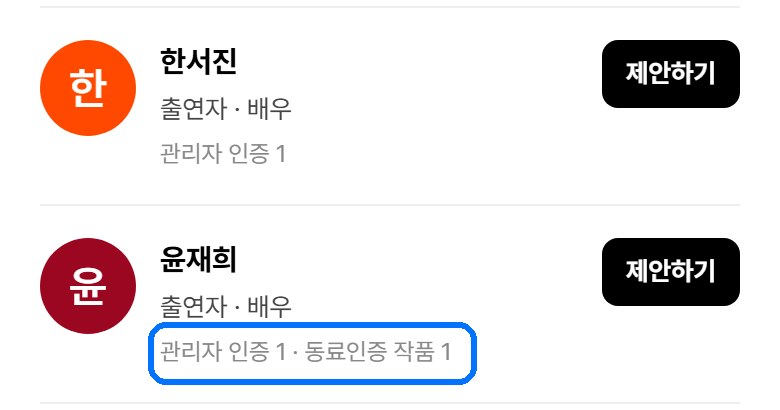
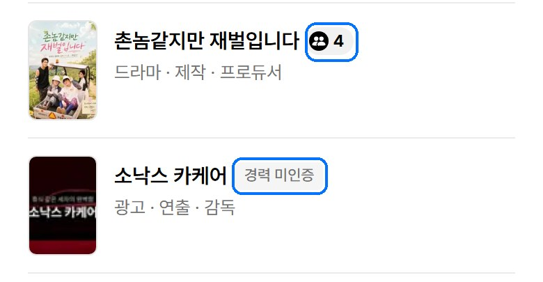
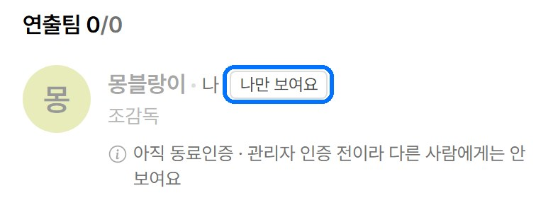
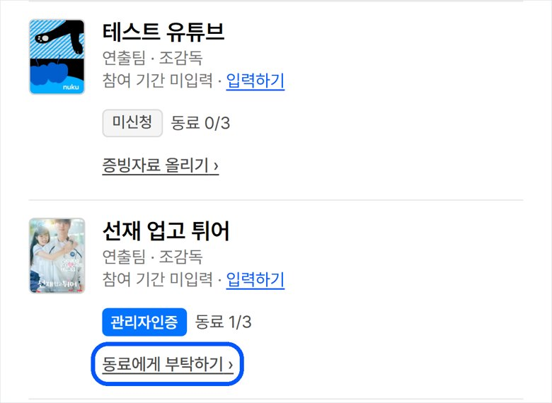
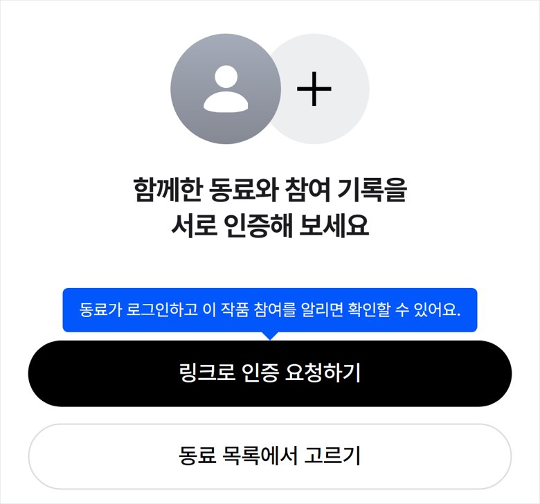
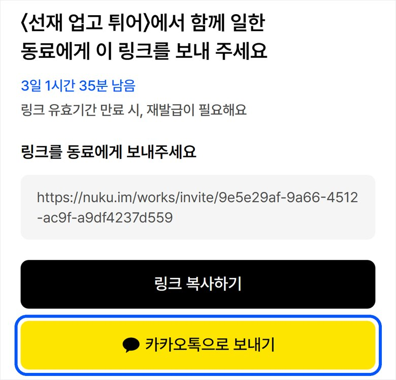
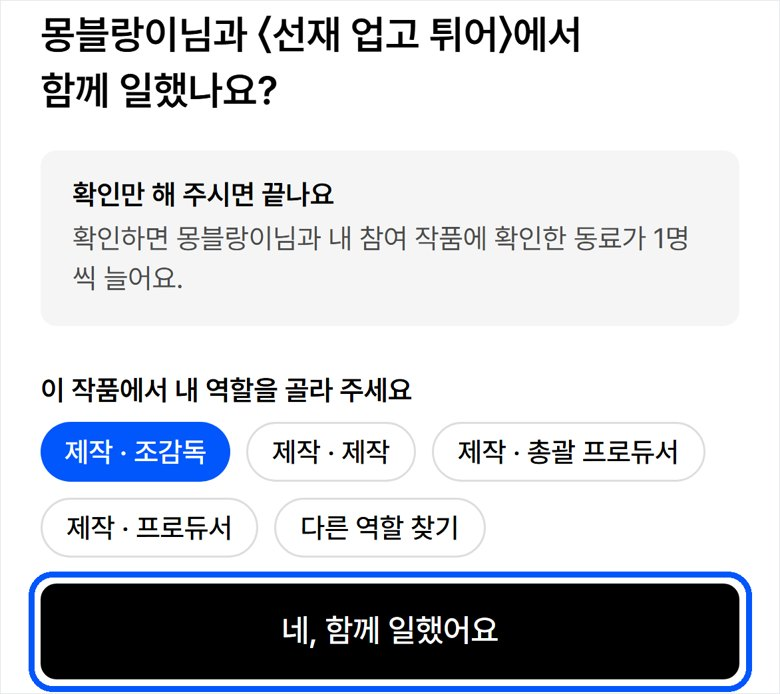

NUKU@nuku.mag · 자료실
nuku 사용법 #01동료인증, 받으면 뭐가 달라지나
「그 작품 진짜 했어요?」에 같이 일한 동료 3명이 대신 답해 주는 기능이에요. 동료가 링크에서 한 번씩 눌러 주면 내 참여 작품이 제작사와 다른 사람에게도 보여요.
한눈에
- 제작사가 쓰는 「인재 찾기」 목록에 동료인증 작품 수가 떠요
- 프로필에 「경력 미인증」 대신 인증 마크와 확인한 동료 수가 붙어요
- 작품 페이지 참여자 목록에 내 이름이 보여요(확인 전엔 나만 보여요)
- 부탁받은 동료도 자기 참여 작품이 같이 등록돼요
받으면 달라지는 것 ① 제작사가 사람 찾을 때 보여요
제작사가 쓰는 워크스페이스 「인재 찾기」 목록에서 이름 아래 「동료인증 작품 n」이 함께 떠요. 프로필을 공개한 사람만 이 목록에 나와요.

실제 nuku 화면 · 제작사 인재 찾기(이름은 예시로 바꿨어요)받으면 달라지는 것 ② 「경력 미인증」 대신 마크가 붙어요
확인 전 작품에는 「경력 미인증」이 붙어요. 동료인증을 받으면 그 자리에 확인한 동료 수가 붙어요.

실제 nuku 화면 · 운영 사이트 프로필받으면 달라지는 것 ③ 작품 페이지에 내 이름이 보여요
참여 작품을 등록해도 동료인증이나 관리자 인증 전에는 작품 페이지 참여자 목록에서 나에게만 보여요. 동료 3명이 확인하거나 관리자 인증을 받으면 다른 사람에게도 보여요.

실제 nuku 화면 · 확인 전 작품 페이지하는 법 1. 참여 작품 등록하기
nuku에서 작품을 검색하고 「이 작품에 참여했어요」로 내 역할을 등록해요. 찾는 작품이 없으면 직접 등록할 수 있어요. 영화는 KOBIS에서 찾아 바로 불러올 수도 있어요.
하는 법 2. 「동료에게 부탁하기」 누르기
마이페이지 > 참여 작품에서 확인받고 싶은 작품 아래에 있어요.

실제 nuku 화면 · 참여 작품 목록하는 법 3. 링크 만들기
「링크로 인증 요청하기」를 누르면 그 작품 전용 링크가 만들어져요. 이미 nuku에 있는 동료라면 「동료 목록에서 고르기」로 바로 부탁할 수도 있어요.

실제 nuku 화면하는 법 4. 동료에게 보내기
「카카오톡으로 보내기」나 「링크 복사하기」로 보내요. 링크는 유효기간이 있어서, 지나면 다시 만들어야 해요.

실제 nuku 화면하는 법 5. 동료는 한 번만 누르면 돼요
링크를 연 동료는 그 작품에서 자기 역할을 고르고 「네, 함께 일했어요」를 누르면 끝이에요. 고른 역할로 동료의 참여 작품도 함께 등록되고, 나와 동료 양쪽에 확인한 동료가 1명씩 늘어요.
동료는 nuku에 가입만 하면 돼요. 작품을 따로 찾아 등록할 필요 없어요. 확인해 주는 동료도 자기 참여 기록이 하나 생겨요.

실제 nuku 화면 · 동료가 받은 화면체크리스트
- 참여 작품을 등록했나
- 확인받을 작품에서 링크를 만들었나
- 함께 일한 동료 3명에게 보냈나
- 링크 유효기간이 지나지 않았나
안내 · 화면은 2026년 11월 기준이에요. 메뉴 이름과 위치는 바뀔 수 있어요.